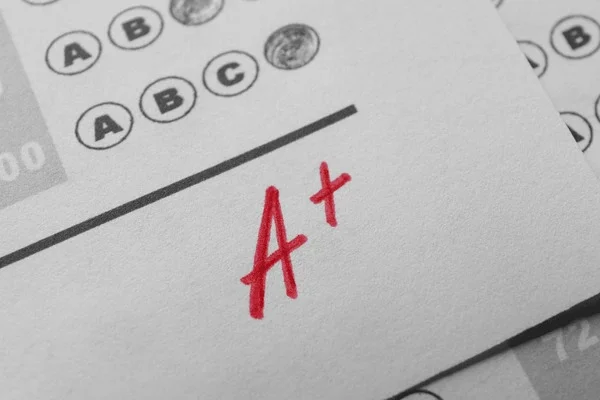
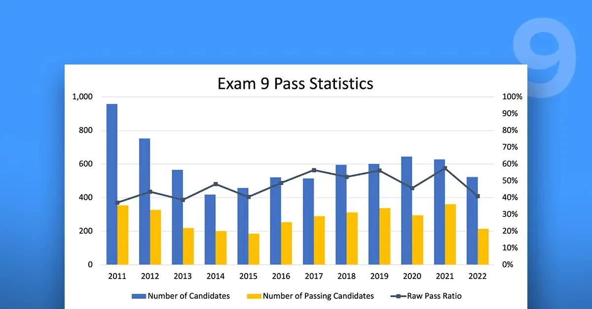

Choosing Your EE Exam Date: Readiness, Deadlines, and Life Planning
How to pick a PEBC EE sitting based on readiness, application deadlines, and life commitments.
Read MoreWelcome to the passEE blog, your resource for expert tips, strategies, and insights to help you succeed in the PEBC Evaluating Examination. Our articles are written by pharmacy professionals who understand the challenges of preparing for this important exam. For comprehensive exam information, check our complete PEBC EE guide, or explore our subscription plans with 2,900+ practice questions.

How to pick a PEBC EE sitting based on readiness, application deadlines, and life commitments.
Read More
Check-in, ID requirements, breaks, computer setup, and exam-day logistics at Prometric test centres.
Read More
Bilingual prep strategies, French question bank resources, and tips for francophone candidates taking the Evaluating Exam.
Read MoreDiscover passEE's revolutionary StudyTogether feature - the first integrated collaborative study tool for PEBC Evaluating Exam preparation in Canada. Learn how to study with friends in real-time call rooms while solving quiz questions together.
Read MoreComplete guide to the new PEBC exemption process effective May 2026. Learn if you qualify to skip the Evaluating Exam and go directly to the MCQ.
Read More
Complete guide to the PEBC EE scoring system, passing standards, quality assurance process, and results interpretation for international pharmacy graduates.
Read MoreLearn the most common preparation pitfalls and mistakes that cause candidates to fail the PEBC EE, and discover exactly how to avoid them.
Read More
A comprehensive analysis of PEBC EE pass rates, factors affecting success, and proven strategies to maximize your chances of passing the Evaluating Exam in 2026.
Read MoreEverything you need to know about the PEBC EE blueprint, including exam structure, number of questions, topic distribution, and sample questions with detailed explanations.
Read MorePractical strategies for managing full-time work while preparing for the PEBC Evaluating Exam, including daily routines, weekend planning, and stress management techniques.
Read More
A comprehensive guide to structuring your PEBC Evaluating Exam preparation with a detailed 12-week study schedule covering all exam topics.
Read MoreEssential calculation types, formulas, and practice problems to help you tackle the pharmaceutical calculations section with confidence.
Read More
Key differences in pharmacy practice between Canada and other countries, with focus on regulations, scope of practice, and healthcare system structure.
Read More
Expert techniques for approaching multiple-choice questions, managing exam time effectively, and reducing test anxiety.
Read MoreFind articles organized by your specific preparation needs: